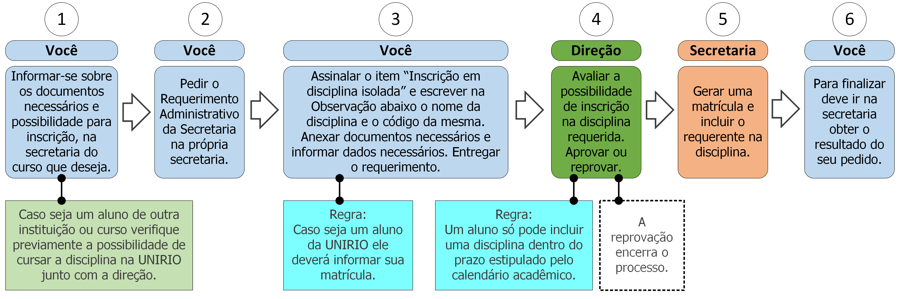

9. Inscrição em disciplina isolada

9.1 Descrição
Um aluno da UNIRIO pode inscrever-se em disciplinas de cursos que não aquele no qual está matriculado. Para inscrever-se em uma disciplina do bacharelado em Sistemas de Informação deve seguir os seguintes passos:
- A. Verifique junto com a secretaria os documentos necessários para inscrição na disciplina que deseja e se é possível inscrever-se na mesma;
- B. Providencie os documentos necessários;
- C. Peça o Requerimento Administrativo da Secretaria;
- D. Assinale o item “Inscrição em disciplina isolada” e escreva no campo Observação o nome e o código da disciplina que deseja incluir. Se aluno informe também matricula.
- E. Anexe os documentos necessários (ver documentos na seção 9.2) ao requerimento;
- F. Entregue o requerimento;
- G. A direção avaliará a possibilidade de inscrição na disciplina requerida (ver regra1 na seção 9.3);
- H. A Secretaria gerará uma matrícula e incluirá o requerente na disciplina;
- I. Vá à secretaria e procure saber sobre o resultado do seu requerimento (ver regra 2 na seção 9.3).
- Condição: Este processo deve ser utilizado apenas para situações extraordinárias. A inclusão em casos usuais deve ser realizada via Internet no Portal do Aluno.
9.2 Documentos necessários
- Para alunos de outros cursos da UNIRIO:
- Comprovante de matrícula.
- Histórico escolar (caso seja uma disciplina com pré-requisitos).
- Para alunos externos à UNIRIO:
- Os documentos dependerão de instância para instância (informe-se na secretaria).
9.3 Regras
- 1. Período de inclusão: A inclusão de disciplina só pode ser feita dentro do prazo estipulado pelo Calendário Acadêmico do período em questão.
- 2. Prazo de efetivação: A Secretaria e a direção têm até 5 dias úteis efetivar a inscrição na disciplina isolada.